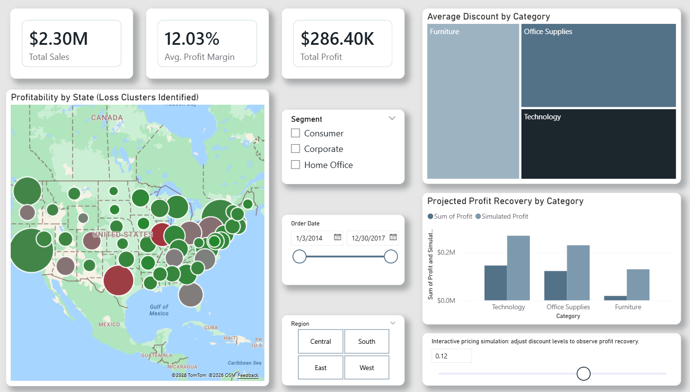

Strategic Pricing Intervention & What-If Simulation
A profitability analysis of approximately 10,000 retail transactions identified a critical financial issue within the Central region. The Texas market is operating at a sustained -$33,955 net loss despite strong sales volume.
Implementing a targeted 5% discount reduction on high-discount transactions in Texas recovers $9,051.80 in net profit, improving the segment's performance by 26% without affecting overall operations.
Initial analysis shows that standard discount levels generate a healthy +26.69% profit margin. However, performance deteriorates as discounts increase.
Profitability turns negative when discounts exceed the 20–30% range, revealing a structural pricing threshold.
This threshold explains why Texas operates at a loss, as discount levels in this region frequently fall within this range.

Instead of applying a general pricing adjustment, a targeted simulation was developed to isolate the effect of discount reductions on high-risk transactions. This approach isolates causality rather than relying on broad assumptions.
The model selectively reduces discounts by 5% only for transactions above the identified threshold, allowing for controlled evaluation of pricing adjustments.
Projected outcomes of the 5% discount reduction strategy.
The analysis was translated into an interactive Power BI dashboard that operationalizes the identified pricing threshold.
A discount reduction parameter allows users to dynamically simulate pricing strategies and observe their impact on profitability across product categories. The results highlight that Furniture and Office Supplies present the highest recovery potential.

pd.cut to identify profitability thresholds.Download the full Evidence-Driven Case Study to review the complete methodology, Python diagnostic logic, and strategic recommendations.